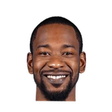

Josh Lewenberg:Casey on Ross:
“He's struggling a little bit but theres no dog house. We're going to help him through this, watch film w/ him, talk w/ him”


Every quote from Dwane Casey about Terrence Ross in the archive, newest first. Each one links to its original source.
Josh Lewenberg:Casey on Ross:
“He's struggling a little bit but theres no dog house. We're going to help him through this, watch film w/ him, talk w/ him”
“The young man, Terrence, picked it up. We lose DeMar (DeRozan) and put on a heck of a display. Not only did he have 51 points, he had nine rebounds which was huge too.”
“There is not a better athlete in the NBA than Terrence Ross. But just, bringing it on a consistent basis is his own personal challenge. We pushed him as a coaching staff and work with him till the cows come home, but until he makes up his mind mentally that he is going to exert that same athleticism and effort on both ends of the floor, that’s when he will make the next step. … He has been working with a shooting coach this summer, trying to get that consistent, working on his shot. His ballhandling, his defense in pick-and-roll situations, he has been working on that all summer.”